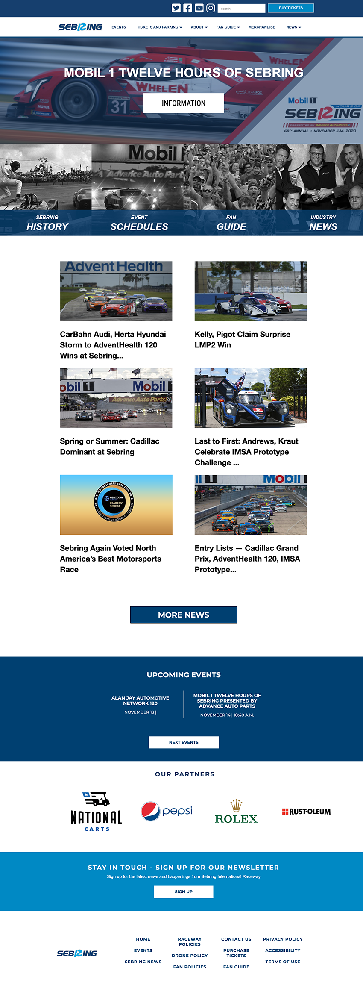
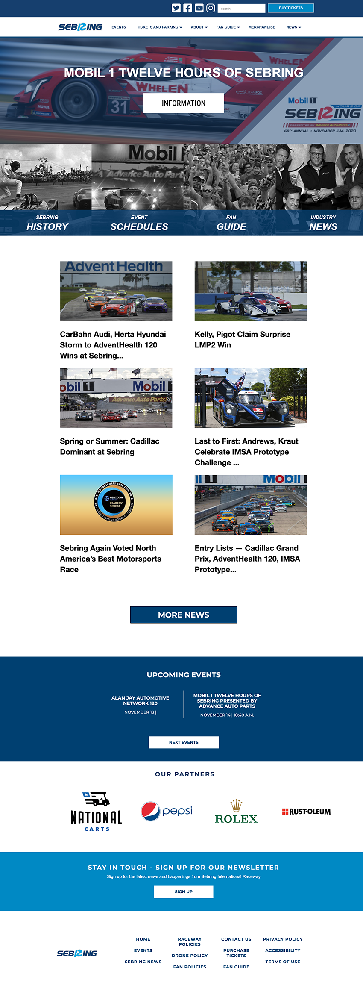

Research
I would start web, email and ad design projects by analyzing the
request sent to us by the account executives, and respond directly
to them or with OEM compliance with any questions or additional
information about the target audience, or goals of their campaigns.
After completion we would look at Google Analytics, Visual Web
Optimizer, heat mapping and Campaigner (email) analytics to see what
was and was not working, we would create a hypothesis, update the
assets and template, and review the findings, keeping what worked,
and eliminating what did not.
In example, one of our biggest such projects was the vehicle search
modules included as the first, and dominant element on their
homepages. Looking at the heat mapping and interaction metrics from
Google Analytics we were able to determine that there were two
primary user groups with the same goal of locating a vehicle but
with different approaches. Some already had an idea of the exact
make and model that they wanted, while others only had a vague idea.
We implemented and A/B tested variants that allowed drop down
selection for year, make, and model, another that had clickable
images that indicated make and model (sedan, convertible, SUV,
etc,), and a final variant that had both.
I designed and executed user tests for Phalanx directly with all
departments. I’d have them walk me through how they used the system
on a daily basis, show me any pain points on their paths. This gave
me insights into their natural unguided usage. I also designed a few
tasks for them to complete so that I could see if my designed user
paths were in line with their actual goals.
Design
After collecting the goals and requirements from our clients or
account executives, we would either create a new site, page, ad, or
email campaign from scratch if the request was highly custom, or
utilize a highly performing template as a boilerplate. High fidelity
mock-ups and designs were created, passed through OEM compliance and
the client for approval, and then built in Phalanx. If an asset was
highly custom we would create this from scratch, but Phalanx
performed at least 90% of the assets.
I noticed this caused a lot of problems as many of the webpages, ads
and email campaigns weren’t properly litmus, cross browser tested,
or designed based on performance analytics from Google or our email
marketing performance metrics. These oversights cost our clients
performance loss, as assets would either break or not be optimized.
As a solution I designed and pitched Phalanx, a custom WordPress
site that generated these assets. These website assets, emails, ads,
and landing pages that were designed and optimized by data from
Google Analytics, heat mapping, Visual Web Optimizer, and Campaigner
for performance, and upon frameworks that work across all browsers
and email clients.
Development
Phalanx also functioned as a job management, staff performance
reporting, budget reporting, and client relationship management
system. I build it as a custom theme with custom plugins. I worked with the SEO, email, ad, AV, media buyer, account executive and management teams to collect and analyze performance. I built a custom component UI library that Phalanx would generate for the endpoint websites, emails, display ads and more.


 
